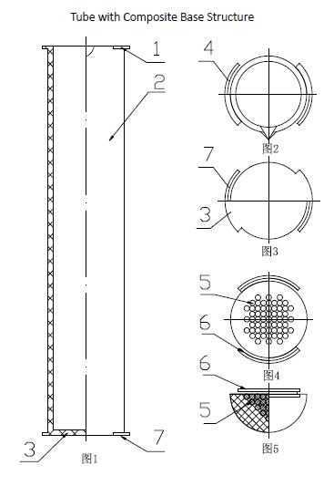

Patent No.201020254020.9 First inventor
At present, there are two kinds of structures or shapes of the tube. They are of round bottom and of flat bottom. Only the round-bottomed tube can do the experiment of chemical reaction by heating and warming. There is no tube that can be even heated and positioned steadily so far. This invention displays a kind of tube, which contains tube body, nozzle and flat bottom, with composite base. Surrounding of the nozzle and flat bottom has the first connecting ditches tank and a half spherical round bottom which contains main body and several heat balls, which is combined with the body closely. The balls connected with each other well and the outline arranged combines with the surface of the body. And the distance between the outline and the surface of the body is the same. There is a second connecting ditches tank which is joggled and circumrotated with the first tank. The new tube collects all the advantages of both flat-bottomed tube and round-bottomed tube. It can not only guarantee even heating but also steady positioning. Meanwhile, when released the tube, you can take apart the half spherical round bottom from the base and then fix it on the nozzle by joggling of the connecting ditches tanks to be the sealing cap. It provides a lot of convenience for the experimenters and saves the experiment equipments.
